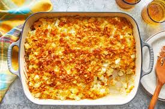

Casserole

Description
A casserole is a hearty, baked dish made by combining a variety of ingredients like vegetables, meat, pasta, or rice with a creamy sauce, often topped with cheese or breadcrumbs. It's typically baked in a single dish until bubbly and golden, making it a comforting and convenient one-pan meal. Casseroles are highly versatile and can be customized with different ingredients based on personal taste or what’s available.
Ingredients
- Avocado cooking spray
- 1 tablespoon olive oil
- ½ teaspoon chili powder
- ¾ cup diced green pepper
- 4 cloves garlic, minced
Steps
- Preheat the oven to 375 degrees F (190 degrees C) and spray a 9x13-inch casserole dish with avocado cooking spray.
- In a large skillet, heat olive oil over medium heat. Add onions and green peppers and cook, stirring, until softened, 2 to 3 minutes. Add garlic and sauté for 30 seconds.
- Add ground beef to the skillet and cook, until no longer pink, breaking up large pieces. Stir and cook until brown, about 5 minutes. Drain excess fat, and reduce the heat to medium-low.
- Stir in tomatoes and green chilies with juice, tomato paste, diced potatoes, cumin, Mexican oregano, chili powder, and salt and pepper to taste. Simmer until fragrant and saucy, 10 to 12 minutes. Remove from the heat and stir in olives and raisins. Pour into prepared casserole dish.
- Combine Cheddar and Monterey Jack cheeses; sprinkle half of cheese mixture on top of picadillo mixture. Reserve remaining cheese for later use.
- Garnish with any combination of chopped tomatoes, fresh cilantro, avocado slices, and chopped green onions, and serve warm.
Home